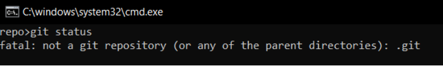
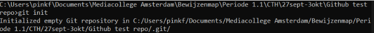
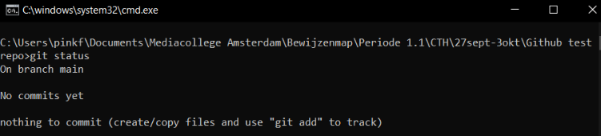
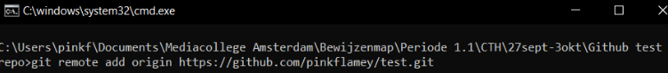
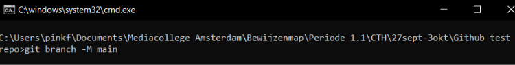
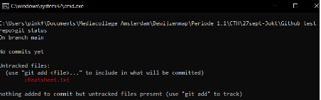
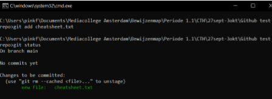
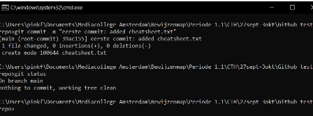
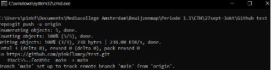

Open in cmd de lege map die de local repository wordt
Check met git status of er geen repository is aangemaakt
Zo niet, gebruik dan git init om de lokale repository in deze map aan te maken.
Check of dit is gelukt met git status
Maak een origin repository aan op github.
Om je lokale repository te linken aan je origin repository, gebruik je git remote add origin [link naar jouw github repository].
Hernoem de master branch naar main met git branch -M main.
Om te checken welke wijzigingen er zijn, gebruik je git status. Als ze nog niet in de staging area staan, zullen de bestandsnamen rood zijn.
Je wijzigingen kun je stagen met git add [bestandsnaam|-A]. A voegt alle wijzigingen in één keer toe aan de staging area. Check of dit is gelukt. Dit zie je als de bestandsnamen groen zijn.
Om je wijzigingen in de staging area te committen, gebruik je git commit -m "[omschrijving]". Nu zal je zien dat als je git status gebruikt, er geen bestanden meer klaar staan.
Om vervolgens je wijzigingen op github te krijgen, of pushen, doe je git push -u origin [branchname(main)].
